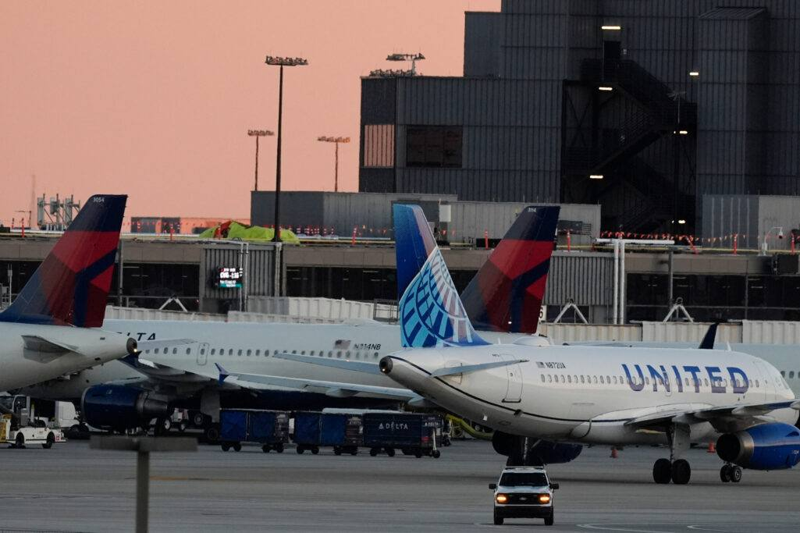
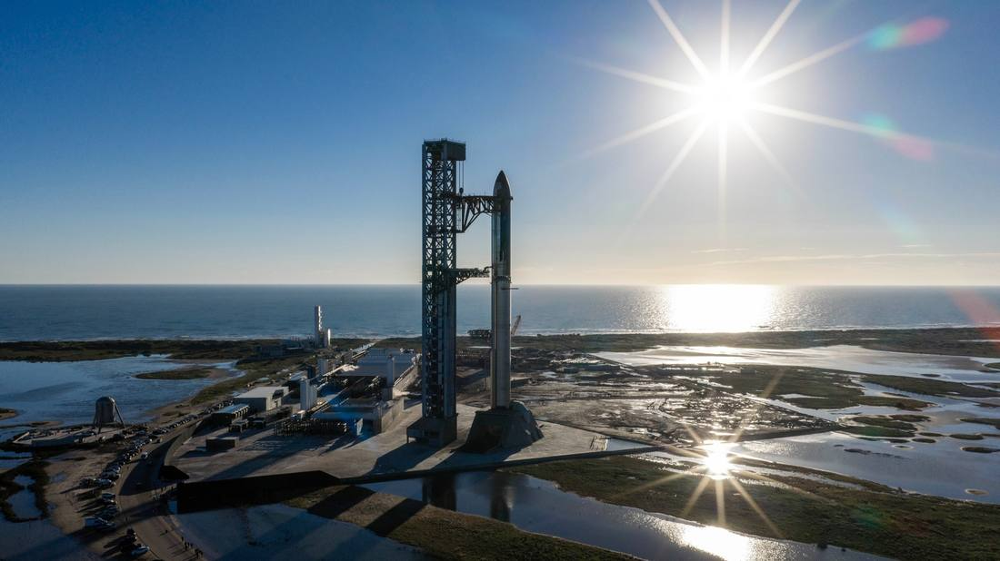
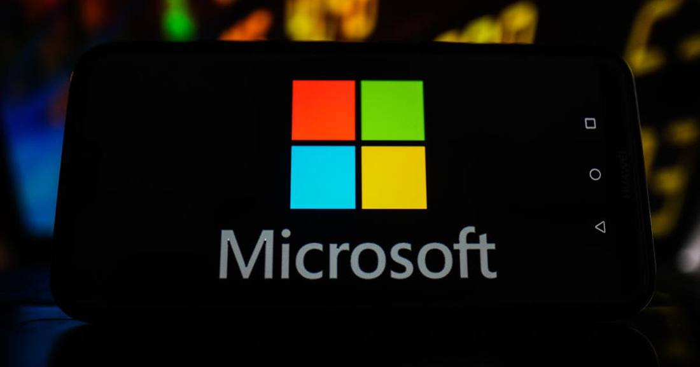

Facts first
Reporting and analysis are kept apart on every page. Sources and uncertainty are stated, not buried.

The Federal Aviation Administration lifted its nationwide ground stop at about 8:15 p.m. Eastern on Friday, November 13, 2026, about four hours after a telecommunications outage halted all departing flights across the United States. The stop, the first nationwide halt since January 2023 and only the second since the September 11, 2001, attacks, left more than 10,000 flights delayed and 5,000 canceled by 8 p.m. Eastern, according to FlightAware, with 827 flights diverted. Transportation Secretary Sean Duffy blamed aging equipment, saying old switches and routers overloaded, while Homeland Security Secretary Markwayne Mullin said there was zero evidence of a cyberattack. Investigators will still examine whether the FAA's newly deployed AI routing tool, SMART, played any role; its maker denies any connection and no official has linked the system to the outage.
 FAA Grounds All U.S. Departures in First Nationwide Stop Since 2023; New AI Routing Tool Faces ScrutinyThe Federal Aviation Administration ordered a nationwide ground stop for all departing flights on Friday afternoon, November 13, 2026, after a telecommunications outage hit all 22 Air Route Traffic Control Centers, the first nationwide halt since January 2023 and only the second since the September 11, 2001, attacks. About 11,000 flights carrying more than 1.5 million passengers were scheduled to depart after 4 p.m. Eastern. Three days earlier, the FAA said its AI-powered SMART air traffic tool was active in the airspace of all 22 centers. Homeland Security Secretary Markwayne Mullin said investigators will look at whether there is any link to the AI rollout; the vendor, Air Space Intelligence, denies any connection, and no official has linked the system to the outage. The FBI is looking into whether a software update triggered the failure and does not believe it was a cyberattack.
FAA Grounds All U.S. Departures in First Nationwide Stop Since 2023; New AI Routing Tool Faces ScrutinyThe Federal Aviation Administration ordered a nationwide ground stop for all departing flights on Friday afternoon, November 13, 2026, after a telecommunications outage hit all 22 Air Route Traffic Control Centers, the first nationwide halt since January 2023 and only the second since the September 11, 2001, attacks. About 11,000 flights carrying more than 1.5 million passengers were scheduled to depart after 4 p.m. Eastern. Three days earlier, the FAA said its AI-powered SMART air traffic tool was active in the airspace of all 22 centers. Homeland Security Secretary Markwayne Mullin said investigators will look at whether there is any link to the AI rollout; the vendor, Air Space Intelligence, denies any connection, and no official has linked the system to the outage. The FBI is looking into whether a software update triggered the failure and does not believe it was a cyberattack.
Starship Flight 15: All 26 Starlink V3 Satellites Deployed; Booster 22 Broke Apart After DivertShip 42 completed the payload half of Starship Flight 15: all 26 Starlink V3 satellites are deployed, with deploy complete at T+1:17:40 (about 00:05 UTC, November 14) and the early Hawaii return checkpoint passed, confirmed by the Starlust live blog citing SpaceX spokesperson Dan Huot and by the Wikipedia flight timeline citing SpaceX. Correction to Flash 355: Booster 22 did not land successfully offshore; its flight termination system activated just after engine shutdown and it broke apart, per the same two sources. Ship 42 stays in orbit for about 14 revolutions, with the first-ever upper-stage tower catch attempt set for about 21:19 UTC on Saturday, November 14, gated on return checks. Nvidia Board Approaches Arm CEO Rene Haas as Huang Successor; Employees Push for Founder's ReturnNvidia's board has approached Arm CEO Rene Haas as a potential successor to Jensen Huang, the Financial Times reported on Friday, November 13, 2026. Haas, who spent seven years at Nvidia before becoming Arm's CEO in 2022 and leading its September 2023 Nasdaq listing, is one of several candidates, with no guarantee of an offer or acceptance. The board says it is still selecting a search firm and has not formally engaged any candidate, calling speculation about individual candidates premature. Inside Nvidia, an internal post urging the board to weigh employee sentiment has drawn more than 1,600 comments, Wired reported, with several calling for Huang's reinstatement, and Elon Musk said on X that he would sign a petition to bring Huang back. Arm's U.S.-listed shares closed down about 5% on Friday and Nvidia's ended about 2% lower, bringing the week's market value losses to about $573 billion. Nvidia reports earnings on November 17 with interim CEO Colette Kress at the helm.
Nvidia Board Approaches Arm CEO Rene Haas as Huang Successor; Employees Push for Founder's ReturnNvidia's board has approached Arm CEO Rene Haas as a potential successor to Jensen Huang, the Financial Times reported on Friday, November 13, 2026. Haas, who spent seven years at Nvidia before becoming Arm's CEO in 2022 and leading its September 2023 Nasdaq listing, is one of several candidates, with no guarantee of an offer or acceptance. The board says it is still selecting a search firm and has not formally engaged any candidate, calling speculation about individual candidates premature. Inside Nvidia, an internal post urging the board to weigh employee sentiment has drawn more than 1,600 comments, Wired reported, with several calling for Huang's reinstatement, and Elon Musk said on X that he would sign a petition to bring Huang back. Arm's U.S.-listed shares closed down about 5% on Friday and Nvidia's ended about 2% lower, bringing the week's market value losses to about $573 billion. Nvidia reports earnings on November 17 with interim CEO Colette Kress at the helm. Starship Flight 15 Lifts Off, but Booster Catch Aborted; Ship 42 Still Aims for Saturday ReturnSpaceX launched Starship Flight 15 from Starbase, Texas, at 22:47 UTC on November 13, 2026, but the planned double catch is already half gone: the Super Heavy booster catch was aborted and Booster 22 diverted to an offshore landing in the Gulf of Mexico, which appeared successful. The flight timeline records one engine failing to relight during the boostback burn, and Investor's Business Daily reports a safety-check issue behind the divert, with SpaceX saying it will investigate the booster. Ship 42 reached orbit and still aims for the first-ever catch of an orbital upper stage on Saturday, November 14, at about 21:17 UTC, after deploying 26 Starlink V3 satellites, subject to health checks. It was the first catch attempt for a Block 3 Super Heavy booster; SpaceX has caught the booster three times before, most recently in March 2025.
Starship Flight 15 Lifts Off, but Booster Catch Aborted; Ship 42 Still Aims for Saturday ReturnSpaceX launched Starship Flight 15 from Starbase, Texas, at 22:47 UTC on November 13, 2026, but the planned double catch is already half gone: the Super Heavy booster catch was aborted and Booster 22 diverted to an offshore landing in the Gulf of Mexico, which appeared successful. The flight timeline records one engine failing to relight during the boostback burn, and Investor's Business Daily reports a safety-check issue behind the divert, with SpaceX saying it will investigate the booster. Ship 42 reached orbit and still aims for the first-ever catch of an orbital upper stage on Saturday, November 14, at about 21:17 UTC, after deploying 26 Starlink V3 satellites, subject to health checks. It was the first catch attempt for a Block 3 Super Heavy booster; SpaceX has caught the booster three times before, most recently in March 2025.| WORLD & POLICY | 18 |
| MARKETS & INDUSTRY | 110 |
| AI FRONTIER | 190 |
| ROBOTICS & AI | 24 |
| WEB3 INFRASTRUCTURE | 4 |
| RESEARCH & SCIENCE | 6 |
FAA Grounds All U.S. Departures in First Nationwide Stop Since 2023; New AI Routing Tool Faces ScrutinyThe Federal Aviation Administration ordered a nationwide ground stop for all departing flights on Friday afternoon, November 13, 2026, after a telecommunications outage hit all 22 Air Route Traffic Control Centers, the first nationwide halt since January 2023 and only the second since the September 11, 2001, attacks. About 11,000 flights carrying more than 1.5 million passengers were scheduled to depart after 4 p.m. Eastern. Three days earlier, the FAA said its AI-powered SMART air traffic tool was active in the airspace of all 22 centers. Homeland Security Secretary Markwayne Mullin said investigators will look at whether there is any link to the AI rollout; the vendor, Air Space Intelligence, denies any connection, and no official has linked the system to the outage. The FBI is looking into whether a software update triggered the failure and does not believe it was a cyberattack.Starship Flight 15: All 26 Starlink V3 Satellites Deployed; Booster 22 Broke Apart After DivertShip 42 completed the payload half of Starship Flight 15: all 26 Starlink V3 satellites are deployed, with deploy complete at T+1:17:40 (about 00:05 UTC, November 14) and the early Hawaii return checkpoint passed, confirmed by the Starlust live blog citing SpaceX spokesperson Dan Huot and by the Wikipedia flight timeline citing SpaceX. Correction to Flash 355: Booster 22 did not land successfully offshore; its flight termination system activated just after engine shutdown and it broke apart, per the same two sources. Ship 42 stays in orbit for about 14 revolutions, with the first-ever upper-stage tower catch attempt set for about 21:19 UTC on Saturday, November 14, gated on return checks.Nvidia Board Approaches Arm CEO Rene Haas as Huang Successor; Employees Push for Founder's ReturnNvidia's board has approached Arm CEO Rene Haas as a potential successor to Jensen Huang, the Financial Times reported on Friday, November 13, 2026. Haas, who spent seven years at Nvidia before becoming Arm's CEO in 2022 and leading its September 2023 Nasdaq listing, is one of several candidates, with no guarantee of an offer or acceptance. The board says it is still selecting a search firm and has not formally engaged any candidate, calling speculation about individual candidates premature. Inside Nvidia, an internal post urging the board to weigh employee sentiment has drawn more than 1,600 comments, Wired reported, with several calling for Huang's reinstatement, and Elon Musk said on X that he would sign a petition to bring Huang back. Arm's U.S.-listed shares closed down about 5% on Friday and Nvidia's ended about 2% lower, bringing the week's market value losses to about $573 billion. Nvidia reports earnings on November 17 with interim CEO Colette Kress at the helm.Starship Flight 15 Lifts Off, but Booster Catch Aborted; Ship 42 Still Aims for Saturday ReturnSpaceX launched Starship Flight 15 from Starbase, Texas, at 22:47 UTC on November 13, 2026, but the planned double catch is already half gone: the Super Heavy booster catch was aborted and Booster 22 diverted to an offshore landing in the Gulf of Mexico, which appeared successful. The flight timeline records one engine failing to relight during the boostback burn, and Investor's Business Daily reports a safety-check issue behind the divert, with SpaceX saying it will investigate the booster. Ship 42 reached orbit and still aims for the first-ever catch of an orbital upper stage on Saturday, November 14, at about 21:17 UTC, after deploying 26 Starlink V3 satellites, subject to health checks. It was the first catch attempt for a Block 3 Super Heavy booster; SpaceX has caught the booster three times before, most recently in March 2025.AI FRONTIERMicrosoft 365 Outage Passes 29 Hours as 22:00 UTC Update Says Recovery Sustained, Mail Backlog Still DrainingMicrosoft posted a new service-health update at 22:00 UTC on November 13, 2026 for its global Microsoft 365 outage, read live on the public status page at about 22:34 UTC and confirmed against the University of Pennsylvania admin-feed mirror crawled at 22:35 UTC. Microsoft continues to observe sustained service recovery across the previously affected environments and is monitoring for an extended period to ensure no additional mitigative actions are required. In parallel, it is monitoring the backlog of email messages accrued during the event to ensure all process successfully before considering the issue resolved, and it believes the majority of impacted scenarios for dependent and related products have been addressed. The page still lists Microsoft 365 (Business or Enterprise) as service degradation. The outage, which began at 16:17 UTC on November 12 with Exchange Online, was still open 29 hours and 43 minutes later. The next update is promised by 02:30 UTC on November 14. FAA Clears Starship Flight 15 for Historic Double-Catch AttemptSpaceX secured its launch license from the Federal Aviation Administration hours before the planned liftoff of Starship Flight 15, Reuters reported on November 13, 2026, clearing the final regulatory hurdle for the mission. Scientific American independently confirmed that the FAA issued the necessary license on Friday afternoon, just hours ahead of the flight. The 407-foot-tall Starship was scheduled to launch at 4:45 p.m. CT (22:45 UTC) on Friday, November 13, from Starbase, Texas, for its 15th flight since 2023 and the second carrying operational Starlink satellites. The mission will attempt something no orbital rocket has done before: recovering both stages at the launch site, with the Super Heavy booster caught by the tower's arms minutes after liftoff and the upper-stage Starship attempting its first-ever land catch about 22 hours later, after deploying 26 next-generation Starlink satellites and circling Earth 14 times. SpaceX has caught the booster three times before, most recently in March 2025; Flight 14 in September reached orbit but ended early after an engine issue.
FAA Clears Starship Flight 15 for Historic Double-Catch AttemptSpaceX secured its launch license from the Federal Aviation Administration hours before the planned liftoff of Starship Flight 15, Reuters reported on November 13, 2026, clearing the final regulatory hurdle for the mission. Scientific American independently confirmed that the FAA issued the necessary license on Friday afternoon, just hours ahead of the flight. The 407-foot-tall Starship was scheduled to launch at 4:45 p.m. CT (22:45 UTC) on Friday, November 13, from Starbase, Texas, for its 15th flight since 2023 and the second carrying operational Starlink satellites. The mission will attempt something no orbital rocket has done before: recovering both stages at the launch site, with the Super Heavy booster caught by the tower's arms minutes after liftoff and the upper-stage Starship attempting its first-ever land catch about 22 hours later, after deploying 26 next-generation Starlink satellites and circling Earth 14 times. SpaceX has caught the booster three times before, most recently in March 2025; Flight 14 in September reached orbit but ended early after an engine issue. OpenAI Backs Three Bills to Tighten China's Access to AI ChipsOpenAI told US lawmakers it supports a bipartisan push in Congress to tighten China's access to AI chips and chipmaking equipment, Bloomberg reported on November 12, 2026. The company had been weighing the package of export-related bills for months and confirmed its support to lawmakers this week, according to people familiar with the matter, who spoke anonymously because the position has not been made public. Punchbowl News reported earlier the same day that OpenAI told multiple Hill offices it supports three named bills: the Chip Security Act, the MATCH Act and the AI OVERWATCH Act. All three cleared the House Foreign Affairs Committee; none has had a House floor vote. Lawmakers seek to attach the measures to the annual defense-policy bill, the National Defense Authorization Act; Senate leaders said on November 12 that negotiators had no final agreement. The reports came the same day Jensen Huang stepped down as Nvidia's chief executive; nothing in the reporting links OpenAI's position to his departure.
OpenAI Backs Three Bills to Tighten China's Access to AI ChipsOpenAI told US lawmakers it supports a bipartisan push in Congress to tighten China's access to AI chips and chipmaking equipment, Bloomberg reported on November 12, 2026. The company had been weighing the package of export-related bills for months and confirmed its support to lawmakers this week, according to people familiar with the matter, who spoke anonymously because the position has not been made public. Punchbowl News reported earlier the same day that OpenAI told multiple Hill offices it supports three named bills: the Chip Security Act, the MATCH Act and the AI OVERWATCH Act. All three cleared the House Foreign Affairs Committee; none has had a House floor vote. Lawmakers seek to attach the measures to the annual defense-policy bill, the National Defense Authorization Act; Senate leaders said on November 12 that negotiators had no final agreement. The reports came the same day Jensen Huang stepped down as Nvidia's chief executive; nothing in the reporting links OpenAI's position to his departure. Apple HomeView Goes on Sale at $299, Putting Siri AI on the Kitchen CounterApple HomeView went on sale on Friday, November 13, 2026, at $299 in the US for both the tabletop and wall-mounted models, in Australia, Canada, India, New Zealand, Singapore, the UK and the US. It is a 7-inch Liquid Retina display built around Siri AI, an entirely new version of Siri that is more capable and conversational, with broad world knowledge and onscreen awareness. It recognizes up to six people by face and shows each person's own content in Messages, FaceTime, Calendar, Reminders and Find My. Siri AI is a beta in HomeView software version 27.2. HomeView is not for sale in the European Union, because Siri AI is currently unavailable in iOS in the EU. Wall mounts from Schneider Home start at $59.95, with the PoE mount at $129.95 coming in early 2027. Announced October 13, it was available to pre-order since mid-October; the fourth-generation Apple TV 4K also went on sale today.
Apple HomeView Goes on Sale at $299, Putting Siri AI on the Kitchen CounterApple HomeView went on sale on Friday, November 13, 2026, at $299 in the US for both the tabletop and wall-mounted models, in Australia, Canada, India, New Zealand, Singapore, the UK and the US. It is a 7-inch Liquid Retina display built around Siri AI, an entirely new version of Siri that is more capable and conversational, with broad world knowledge and onscreen awareness. It recognizes up to six people by face and shows each person's own content in Messages, FaceTime, Calendar, Reminders and Find My. Siri AI is a beta in HomeView software version 27.2. HomeView is not for sale in the European Union, because Siri AI is currently unavailable in iOS in the EU. Wall mounts from Schneider Home start at $59.95, with the PoE mount at $129.95 coming in early 2027. Announced October 13, it was available to pre-order since mid-October; the fourth-generation Apple TV 4K also went on sale today. Microsoft 365 Outage Passes 27 Hours as 20:02 UTC Update Says Mail Still Catching UpMicrosoft posted a new service-health update at 20:02 UTC on November 13, 2026 for its global Microsoft 365 outage, read live on the public status page at about 20:05-20:06 UTC. As infrastructure stabilizes, Microsoft is still draining queued messages and rebalancing traffic, so customers may see improved sign-in and access while delivery and processing continue to catch up. The update gives no time for full recovery yet and says service access can recover before mail flow fully normalizes. The page still lists Microsoft 365 (Business or Enterprise) as service degradation. The outage, which began at 16:17 UTC on November 12 with Exchange Online, was still open 27 hours and 45 minutes later. The next update is promised by 00:00 UTC on November 14.
Microsoft 365 Outage Passes 27 Hours as 20:02 UTC Update Says Mail Still Catching UpMicrosoft posted a new service-health update at 20:02 UTC on November 13, 2026 for its global Microsoft 365 outage, read live on the public status page at about 20:05-20:06 UTC. As infrastructure stabilizes, Microsoft is still draining queued messages and rebalancing traffic, so customers may see improved sign-in and access while delivery and processing continue to catch up. The update gives no time for full recovery yet and says service access can recover before mail flow fully normalizes. The page still lists Microsoft 365 (Business or Enterprise) as service degradation. The outage, which began at 16:17 UTC on November 12 with Exchange Online, was still open 27 hours and 45 minutes later. The next update is promised by 00:00 UTC on November 14. OpenAI Launches ChatGPT Wallet, Letting Dots Agents Pay for PurchasesOpenAI launched ChatGPT Wallet on Friday, November 13, 2026, a payment feature that lets its always-on dots agents complete purchases on a user's behalf without ever seeing the user's actual card details. Built in partnership with American Express, Mastercard and Visa, it rolls out first to a limited group of US ChatGPT Pro subscribers aged 18 and older with eligible US-issued cards. Before each purchase the user reviews the items, total and card, then approves with a biometric security check; the payment network then issues a single-use token carrying a substitute card number. OpenAI takes no cut of transactions at launch, per CNBC, and published a Commerce Partner Playbook alongside the wallet. Amazon blocks agent buying on its platform, and United Airlines restricted unauthorized third-party agent bookings on November 11.
OpenAI Launches ChatGPT Wallet, Letting Dots Agents Pay for PurchasesOpenAI launched ChatGPT Wallet on Friday, November 13, 2026, a payment feature that lets its always-on dots agents complete purchases on a user's behalf without ever seeing the user's actual card details. Built in partnership with American Express, Mastercard and Visa, it rolls out first to a limited group of US ChatGPT Pro subscribers aged 18 and older with eligible US-issued cards. Before each purchase the user reviews the items, total and card, then approves with a biometric security check; the payment network then issues a single-use token carrying a substitute card number. OpenAI takes no cut of transactions at launch, per CNBC, and published a Commerce Partner Playbook alongside the wallet. Amazon blocks agent buying on its platform, and United Airlines restricted unauthorized third-party agent bookings on November 11.
Microsoft 365 Outage Passes 25 Hours as 17:57 UTC Update Says Underlying Issue AddressedMicrosoft posted a new service-health update at 17:57 UTC on November 13, 2026 for its global Microsoft 365 outage, saying it is seeing broad recovery and stability across its services and has addressed the underlying issue while continuing to restore service to the remaining customers and regions. Microsoft apologized for the disruption and said the incident was a technical issue not related to cyber or AI agents, introduced by an issue during an earlier network capacity upgrade that surfaced following a recent network change. Services were restored gradually, validating stability at each stage, and a full post-incident report is promised once the review is complete. The outage, which began at 16:17 UTC on November 12 with Exchange Online, was still open 25 hours and 40 minutes later. The next update is due by 20:00 UTC.Policy, geopolitics and macro forces — the events that move the map.
OPEN DESK → · 18 REPORTS02Capital, deals and industry structure, with every number sourced.
OPEN DESK → · 110 REPORTS03Models, agents and compute — verified against primary sources before publication.
OPEN DESK → · 190 REPORTS04Humanoids, embodied AI and automation — real deployments, not demos.
OPEN DESK → · 24 REPORTS05Blockchain infrastructure and industry facts. No investment advice.
OPEN DESK → · 4 REPORTS06Papers, labs and frontier science, with the limits of each claim stated.
OPEN DESK → · 6 REPORTSOne sponsor slot per cycle across the briefing and the homepage. Pricing steps up with real traffic. Audience numbers are never inflated.
Reporting and analysis are kept apart on every page. Sources and uncertainty are stated, not buried.
Key facts link back to the publishing institution and the original document, with page screenshots on file.
Each report carries a screenshot of its primary source. One click takes you to the original.
Events, timelines and entities are linked, so a headline becomes a position in a larger picture.
We monitor official announcements, filings, wire reporting and front-line social signals, then merge duplicate coverage of the same event.
Social posts are leads, never sources. Each event is confirmed against its primary source and a second independent report before publication.
Background, timelines and related entities are attached to every event, and follow-ups are published as updates to the same record.